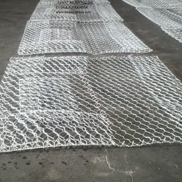
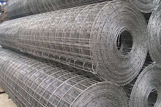

Jual Atap Lengkung di Bitung ☎ 0822 4582 0777 (Rinanti)
Tergantung setiap kebutuhannya, bagi bangunan yang megah mungkin beton akan menjadi pilihan. Layaknya projek pembangunan yang magak di tengah jalan karena tidak mempunyai atap yang bisa dipakai di atasnya. Disini, galvalum mempunyai peran penting sebagai atap sebuah bangunan. Pada kesempatan kali ini saya akan membahas beberapa jenis atap, seperti atap galvalum, atap lengkung, seng gelombang, plat seng & plat galvalum dan masih banyak lagi. Banyak sekali jenis ragam atap mulai dari yang konvensional sampai modern yang dapat digunakan dalam sebuah pembangunan. Maka simaklah artikel yang akan saya ulas berikut ini.
Distributor & Supplier Atap Lengkung

Bagian yang berfungsi sebagai pelindung bagi pengguna dan isi bangunan dari panas, hujan dan berbagai macam cuaca adalah atap lengkung Bitung. Ya, atap lengkung Bitung sangatlah dibutuhkan untuk setiap bangunan yang dibangun oleh manusia. Atap haruslah mempunyai sifat kedap air sehingga air hujan tidak akan merembes kedalam bangunan tersebut.
Bila atap lengkung sudah bocor maka kualitas dari atap lengkung tersebut akan diragukan. Salah satu jenis atap galvalum yang sekarang sedang populer adalah atap lengkung Bitung. Salah satunya juga harus kuat menahan derasnya air hujan.
Atap lengkung biasa dapat anda temukan pada bangunan-bangunan yang dibuat untuk keperluan olahraga. Anda pastilah pernah melihat bahwa atap lengkung Bitung di salah satu stadion itu berbentuk lengkungan. Atap dengan kualitas baik adalah atap lengkung Bitung yang kuat menahannya derasnya iklim dan cuaca. Bila anda ingin mengetahui harga dari setiap jenis atap lengkung Bitung maka anda cukup menghubungi kontak yang tertera pada website dis.or.id. Bila anda mencari atap galvalum dengan lengkungan yang unik tersebut. Cukup hubungi kontak yang tertera pada dis.or.id dan dapatkan harga terjangkau untuk anda.
Info Pemesanan Selengkapnya
Google Maps: https://www.google.com/maps/d/u/0/viewer?mid=1jTQUf9ULWdUIa8iDLwabVtcOdrQf8Eme&ll=-7.272623401464149%2C112.6482284&z=17
Note: https://www.facebook.com/notes/distributor-of-industrial-supply/pabrik-supplier-atap-lengkung/1782710675362145/
Event: https://www.facebook.com/events/137280070316926/
Portfolio Produk: https://www.facebook.com/pg/DistributorOfIndustrialSupplyDIS/photos/?tab=album&album_id=1683772021922678
Distributor & Supplier Besi Beton

Bangunan apakah itu dalam wujud rumah atau toko harusnya menggunakan material yang kokoh dan kuat. Besi beton sendiri adalah material yang biasa digunakan dalam konstruksi dengan kekuatan yang sangat besar serta tahan terhadap berbagai guncangan dan tekanan. Pendidikan sangat penting karena digunakan dalam berbagai bentuk struktur bangunan baik bangunan kecil maupun bangunan besar seperti jembatan, Bendungan, terowongan dan masih banyak lagi. Pengaplikasian besi beton pada suatu bangunan kini telah banyak digunakan karena banyak keunggulan yang diberikan oleh Besi beton.
Segera kunjungi dis.or.id untuk mendapatkan besi beton yang anda inginkan. Dengan mengunjungi situs tersebut, anda bisa mendapatkan detail info serta harga yang pastinya sangat murah di bandingkan tempat lainnya. Kualitas dan mutunya pun telah terjamin. Jadi, anda tidak perlu ragu lagi.
Distributor & Supplier Steel Grating

Seiring dengan perkembangan zaman, dunia pembangunan bidang kontruksi juga mengalami perubahan amat drastis. Cara menghubungkan bagian-bagian tersebut adalah dengan menggunakan pengelasan atau penguncian. Selain untuk keamanan, juga untuk aksesoris kolam renang. Grating ini bisa dirangkai plat strip besi baja dan besi ulir yang dilas pada permukaan silangnya sehingga akan membuat bangunan lebih kokoh dan kuat.
Terdapat banyak jenis steel grating yang di jual sehingg anda dapat dengan mudah memilih sesuai dengan kebutuhan.
Distributor & Supplier Pipa (Hitam/Gas, Galvanis)

Pipa hitam gas galvanis pemanfaatannya sangat berbeda dengan jenis pipa pada umumnya, banyak sekali manfaat yang diperoleh dengan mengaplikasikan jenis pipa ini. Pipa hitam gas galvanis memiliki kekuatan yang tidak dapat diragukan, bagian luar pipa juga telah terlapis stainless steel sehingga menjadikannya tahan korosi. Tentukan kebutuhan pipa hitam anda pada kami, tersedia ukuran ½ inc sampai 40 inc. Hubungi segera kontak yang telah tersedia untuk informasi lebih detail, kami menerima segala kebutuhan besi baja anda kapanpun dan dimanapun.
Distributor & Supplier Kawat Bronjong/Gabion

Kawat bronjong bisa bertahan sangat lama karena kawat ini tidak mudah berkarat. Biasanya ini dilakukan ketika ada jalan atau bangunan yang ada di bawah tebing. Bentuknya sama seperti kawat pada umumnya. Ini mencegah longsor yang mengakibatkan bangunan atau jalan yang berada di atas tebing mengalami kerusakan ketika tanahnya mengalami erosi. Kawat ini berfungsi agar tidak terjadi gerusan akibat arus air yang mengakibatkan tiang penyangga rusak di mana hal ini bisa berakhir dengan rubuhnya jembatan. Tujuannya agar bebatuan tidak hancur karena terkena ombak terus menerus.
Jika sat ini anda sedang membutuhkan kawat bronjong, anda bisa langsung saja mengunjungi dis.or.id. Sehhingga, anda bisa leluasa memilih kawat bronjong mana yang susuai dengan yang anda butuhkan.
Distributor & Supplier WF H-beam

Besi WF kini banyak dikenal sebagai salah satu jenis profil baja Struktural yang berkualitas. Jenis besi ini banyak dimanfaatkan sebagai bahan konstruksi baja. Dari sisi kekuatan, jenis besi ini tergolong padat dan kuat selipun di tekan dan di tarik. Entah dari sisi kekuatan tekan nya atau tariknya. menggunakan besi ini tidak perlu khawatir keberatan karena terbukti ringan dengan komponen yang bagus dan seimbang.
Maka dari itu, kualitasnya sudah terjamin.
Kini anda bisa mendapatkan besi WF H-beam dengan sangat mudah, caranya anda bisa langsung saja datang ke dis.or.id. Ada baiknya anda langsung mengunjungi dis.or.id. Pastinya dengan harga yang sangat terjangkau.
Distributor & Supplier Expanded Metal
.jpg)
Expanded metal atau yang dikenal juga dengan grid mesh ini adalah lembaran baja berbentuk jala dengan lubang-lubang yang homogen dan sangat cocok jika digunakan untuk berbagai aplikasi selain dari Pagar BRC. Dimana Expanded Metal ini dibuat dengan menggunakan baja berkadar karbon rendah tanpa di las, tanpa sambungan dan dikenal lebih kuat. Selain itu, Expanded Metal ini juga memiliki banyak jenis.
Jika anda saat ini sedang mencari dan membutuhkan expanded metal, ada baiknya anda mengunjungi dis.or.id. Disana anda bisa menemukan dan memesan langsung expanded metal yang anda butuhkan.
Distributor & Supplier Plat (Hitam, Kapal, Bordes, Strip)

Material Plate kapal padadasarnya dilihat dari segi penampakan Fisiknya sama dengan plat hitam mempunyai warna yang hitam akan tetapi,ada perbedaan dari ukuran dimensi dan kandungan kimianya dikarenakan fungsinya dan aplikasinya yang berbeda.
Jika anda sedang mencari plat hitam, bordes, kapal dan jenis plat lainnya. Anda bisa langsung saja mengunjungi dis.or.id. Tak perlu khawatir harga, karena harga yang di patok pastinya sangat murah dan terjangkau.
Distributor & Supplier Floor Deck (Bondex)

Anda yang punya rencana pembangunan dan membutuhkan material untuk pengecoran lantai mungkin bisa menggunakan floor deck. Jika memilih menggunakan Floor Deck ini bisa langsung berfungsi juga sebagai bekisting permanen dan siap di cor dalam waktu singkat. Menggunakan Floor Deck bisa mengurangi pemakaian perancah serta tiang-tiang penyangga sehingga akan lebih menghemat biaya. Sebagai pengganti tulangan positif searah. Maka dari itu tidak mengherankan jika saat ini banyak yang lebih memilih menggunakan Floor Deck ini.
Kini anda bisa mendapatkan floor deck berkualitas dan bermutu tinggi dengan hanya mengunjungi situs dis.or.id. Disana anda bisa mendapatkan info lebih lengkap dan detail mengenai harga dan spesifikasi dari floor deck.
Distributor & Supplier Atap Galvalum

Pada kesempatan ini, kami akan menjelaskan pengertian dari atap seng galvalum. Galvalum memiliki banyak kelbihan sehingga dia lebih banyak digunakan jika dibandingkan dengan kayu.
Primadona galvalum ini dinilai lebih efektif jika dibandingkan dengan galvanis. Galvalum atau biasa disebut baja ringan, terbukti mempunyai banyak kelebihan jika dibandingan dengan kayu. Saat proses pemasangan rangka pada bagian atap.
Ada anggapan bahwa atap galvalum membuat suasana menjadi panas dan bersik. Namun, banyak anggapan yang mengatakan bahwa memasang galvalum akan membuat rumah akan terasa panas dan berisik. Galvalum mampu menahan panas hingga memantaulkan sinar UV. Bila anda mencari atap galvalum dengan berbagai ukuran, maka anda datang ke tempat yang tepat. Seng tidak dapat memantulkan panas dari matahari. Jenisnya yang beragam dan banyak ukuran yang dapat disesuaikan mampu memenuhi kebutuhan anda.
Distributor & Supplier Truss Canal C

Salah satu besi yang tidak kenal musim dan telah banyak menggantikan dan menggeser fungsi kayu sebagai pembangunan rumah anda. Jadi ketika anda mendengan istilah CNP, diharapkan anda tidak bingung atau merasa rancu lagi, karena pada dasar nya sama. Sehingga akan awet bahkan dengan karat sekalipun. Tidak heran bila saat ini besi ini lebih banyak diminati, selain karena mudah didapatkan, memiliki kekuatan yang sama, tahan lama juga karena harga yang dinilai lebih ekonomis. Jarak antar reng galvalume perlu diperhatikan. Besi ini tidak dibuat oleh tukang las biasa, melainkan di olah oleh pabrik yang khusus bergerak dibidang peleburan besi dan logam. Maka janganlah ragu dengan pilihan anda. Segala sesuatu juka diukur sesuai dengan ilmunya maka akan menghasilkan karya yang bangus serta hemat biaya. Bila anda mencari kanal c atau truss maka anda sudah datang ke tempat yang tepat.
Distributor & Supplier Hollow Galvalum

Hollow galvalum menjadi primadona bagi banyak orang dikarenakan uniknya komponen berikut ini. Bahkan kini besi ini sudah mulai menggeser penggunaan kayu pada rangka plafon. Untuk memudahkan pemasangan atap, tentunya diperlukan hollow galvalum yang berkualitas bukan?
Karena hollow galvalum ini dapat ditemukan di toko bangunan khusus yang keberadaannya juga sudah menjamur. Kami akan mengirim barang pesanan anada sampai pada tujuan dengan aman, cepat dan tepat tujuan. Sehingga tidak heran bila hollow galvalum menjadi produk paling dicari oleh masyarakat dalam industri pembangunan. Studi penelitian telah mengungkapkan bahwa kerangkan plafon menggunakan jenis hollow ini bisa bertahan puluhan tahun. Mengapa kami bisa menjual lebih murah? Karena kami adalah distributor resmi dari pabrik, sehingga anda akan mendapatkan harga pabrik langsung dari kami.
Distributor & Supplier Seng Gelombang

Seng gelombang memiliki banyak keunggulan dari berbagai sisi. Sekarang ini telah tersedia atap bangunan berbentuk seng gelombang yang memiliki banyak keunggulan, baik dilihat dari fungsi maupun harga jual pasarnya. Meskipun begitu, nyatanya seng gelombang memiliki kekurangan yakni ia lebih cepat menyerap panas. Melihat dari keunggulannya ini, seng gelombang warna memang memiliki harga yang relatif lebih mahal. Walaupun begitu, harga jual seng gelombang warna masih ekonomis dan pas dikantung untuk anda yang ingin menghemat pengeluaran pembangunan.
Seng gelombang sekarang ini diburu banyak masyarakat untuk menutup bagian atap bangunan mereka. Jika anda membutuhkan seng gelombang kecil ini sekarang juga, maka segera hubungi kami di dis.or.id untuk kepentingan lebih lanjut. Seng gelombang dengan warna ataupun transparan amatlah awet bila dibandingkan dengan bahan pembuat atap lainnya.
Distributor & Supplier Plat Seng

Biasanya plat galvanis dijual lembaran atau per meter. Harga plat galvanis lembaran akan lebih mahal dibandingkan dengan harga per meter.
Dan apabila anda merasa kurang paham tentang ukuran yang mana yang sesuai dengan kebutuhan anda, anda dapat mengkonsultasikan nya dengan kami secara gratis. Namun apabila anda membutuhkan nya hanya sedikit, misal untuk penyambungan, atau ingin mengganti beberapa bagian talang rumah anda, anda dapat membeli yang per meter saja. Namun jika anda hanya sekedar menggunakan nya untuk kebutuhan renovasi (dalam jumlah yang sedikit) anda dapat membeli yang per meter. Silakan kunjungi dis.or.id, situs tentang distributor industri ini memuat banyak sekali manfaat untuk anda.
Disana banyak sekali info yang sangat berguna untuk anda yang sedang mencari plat seng & plat galvalum sesuai kebutuhan anda. Lalu berapa harga plat galvanis 2018? Bila anda sedang mencari harga terbaru hari ini juga, anda dapat menghubungi kami karena kami menjual plat galvanis, galvalum dengan berbagai ketebalan dan ukuran.
Distributor & Supplier Genteng Metal

Berbicara tentang genteng metal memang akan identik dengan perbandingan metal vs keramik. Genteng metal adalah genteng yang terbuat dari campuran dari bahan bahan yang terbuat dari logam, seperti zinc, baja ringan dan galvanis. Keberadaan genteng metal sudah menggantikan genteng konvensional yang terbuat dari tanah liat. Genteng metal dinilai lebih praktis dan lebih awet. Apakah anda sedang mencari genteng metal berkualitas? Maka anda berada di tempat yang tepat, silakan kunjungi dis.or.id dan dapatkan info menarik khusus untuk anda yang ingin segera mengetahui keunggulan genteng metal ini.
kami berusaha mencari kepuasan pelanggan kami. Bila belum percaya, maka anda dapat mengujungi situs official kami di dis.or.id untuk mendapatkan info yang lebih lanjut dan dapatkan penawaran terbaik dari kami khusus untuk anda.
Distributor & Supplier Besi Wiremesh

Wiremesh merupakan besi lonjor panjang yang disusun seperti anyaman sehingga membentuk lembaran. Besi wiremesh sering di anggap banyak orang adalah besi anyam karena strukturnya yang mirip dengan anyaman. Bentuk anyaman dari besi wiremesh sendiri bermacam-macam, ada yang membentuk kotak-kotak ada juga yang jajar genjang, anda dapat memilih sesuai kebutuhan. Untuk kepentingan konstruksi, besi wiremesh diaplikasikan untuk keperluan anak tangga, plat lantai, dan penguat dak beton. Tentu saja, tidak semua kebutuhan besi wiremesh bisa menggunakan jenis yang sama. Besi wiremesh dengan ketebalan 8 sampai 10 digunakan untuk bangunan bertingkat. Dibanding jenis besi lain, kekuatan besi wiremesh lah yang terbaik, sebab ia diproduksi dengan sistem las otomatis. Jika anda membutuhkan besi ini, segera hubungi kami dikontak yang tersedia.
Distributor & Supplier Pagar BRC

Pagar BRC dibuat dari besi beton berukuran diameter 5 mm – 8 mm sehingga tergolong kuat sebagai pagar pengaman. besi-besi berdiameter diatas digabungkan dengan bantuan mesin las wiremesh sehingga tersusun menjadi satu bagian rapi. Pagar BRC termasuk pada kategori pagar minimalis yang siap pakai. Kekuatannya pun tidak dapat diragukan lagi karena ia dibuat dengan baja yang bertegangan tinggi, U55 grade dan tegangan ijin 2900kg/cm2. Lapisan galvanis yang terdapat pada pagar BRC menjadikannya tahan akan korosi maupun karat, tak heran bila umur pengaplikasian dari pagar BRC bisa mencapai 10 tahun. Disini kami siap menerima pesanan pembuatan pagar BRC untuk anda yang membutuhkan.
Distributor & Supplier Kawat Loket, Kawat Harmonika

Adalagi jenis kawat yang cocok diaplikasikan sebagai penyekat maupun kawat pagar, yakni kawat loket harmonika ini. Tak hanya sampai disitu, kebutuhan akan kawat loket harmonika mencakup berbagai bidang industri, baik keperluan rumahan sampai industri. Untuk kehidupan sehari-hari kawat harmonika banyak digunakan untuk keperluan rumahan, konstruksi, dan industri. Anda dapat memesan kawat loket harmonika yang terlapis dengan galvanis untuk kualitas terbaik yang tahan korosi. Anda dapat menghubungi kami untuk info pemesanan kawat harmonika tersebut, tersedia kawat harmonika dengan diameter 1,5 mm sampai 4 mm, lubangnya bisa mencapai 20mm sampai 70mm tergantung kebutuha anda. kami dapat memenuhi kebutuhan kawat loket harmonika anda dengan beragam ukuran, maksimal ukuran yang diterima adalah 3 meter.
Distributor & Supplier CNP & UNP

Besi UNP atau yang biasa disebut dengan besi kanal merupakan besi yang memiliki bentuk lengkung seperti huruf U dan biasanya diaplikasikan sebagai sambungan atau dudukan atap. Selain sebagai sambungan, besi kanal UNP ini juga cocok dimanfaatkan untuk keperluan girts dan penutup sebuah dinding. Sedangkan untuk kembarannya sendiri, besi CNP banyak digunakan untuk keperluan cladding dan gording. Untuk bentuknya sendiri besi CNP memiliki bentuk yang melengkung dan membentuk huruf C, untuk itulah kenapa banyak orang yang menyebutnya sebagai besi profil C. Bagi anda yang berminat menggunakan besi CNP tentu sangat bersyukur, karena besi ini sangat fleksibel dan ia bisa dimodifikasi dari plat koil dengan teknik cutting.
Distributor & Supplier Besi Siku

Setiap konstruksi bangunan pasti menggunakan material konstruksi besi siku ini untuk kebutuhan bagunan. Besi siku menjadi salah satu material yang dapat diandalkan sebagai besi penyangga. Dengan bentuk kedua sisinya yang tegak lurus, anda bisa manfaatkan besi ini untuk keperluan rumah tangga ataupun furniture. Kami menerima segala kebutuhan anda mengenai besi siku ini! Tentu saja produk yang kami tawarkan berkualitas unggul. Anda dapat memesan besi siku dengan berbagai ukuran pada kami. Butuh informasi lebih lengkap lagi? Kunjungi saja situs resmi kami di www.dis.or.id Informasi lebih detail akan anda dapatkan dengan menghubungi kontak yang tertera pada website dis.or.id.
Distributor & Supplier Hollow (Hitam, Galvanil, Galvanis)

Besi hollow banyak sekali dimanfaatkan untuk kebutuhan proyek bangunan karena kualitasnya yang lebih kuat dibanding kayu. Dengan menggunakan material ini pembangunan konstruksi juga bisa selesai lebih cepat sehingga meminimalkan upah pekerja. Jika saat ini anda membutuhkan besi hollow, anda dapat menghubungi kontak yang telah tersedia atau kunjungi saja website resmi kami di dis.or.id. Kami telah menyediakan besi hollow hitam galvanil galvanis yang bisa anda pesan langsung. Apabila anda membutuhkan material hollow hitam, kami dapat melayani kebutuhan anda tersebut dengan berbagai spesifikasi ukuran. Kami pun merupakan distributor relasi dari dis.or.id yang menawarkan produk hollow hitam galvanil galvanis dengan kualitas terbaik dan harga yang murah. Manfaat besi hollow dalam kehidupan ini banyak sekali, diantaranya untuk keperluan pagar, teralis, pintu besi, dan berbagai kebutuhan lain. Butuh info lebih lanjut? Anda dapat menghubungi kontak yang telah tersedia. Untuk informasi detail mengenai panjang dan harganya, segera hubungi kami. Anda bebas untuk menentukan ukuran pesanan besi hollow yang dibutuhkan pada kami. Jika anda tertarik memesan besi hollow ini maka tentukan dulu total kebutuhan anda, hubungi kami segera untuk info lebih lanjut!Selain sebagai pengganti material kayu, besi hollow yang kami jual dapat anda manfaatkan untuk kepentingan teralis, pintu besi, pagar, dan lain sebagainya.Bagi anda yang membutuhkan besi hollow, anda dapat menghubungi kami, besi hollow yang kami tawarkan cocok untuk kebutuhan pagar, pintu besi, teralis, dan lain sebagainya.Selain sebagai pengganti material kayu, besi hollow banyak dimanfaatkan untuk kebutuhan pintu besi dan teralis. Anda dapat menghubungi kontak kami untuk melakukan perhitungan kebutuhan hollow hitam tersebut. Hubungi kami untuk lakukan konsultasi kebutuhan besi hollow dan panjang yang dibutuhkan. Bagi anda yang membutuhkan besi ini, kami dapat membantu anda untuk menentukan ukuran besi yang diperlukan dengan menghubungi kontak kami!
Distributor & Supplier Pipa Pancang

Produk pertama industri DIS adalah pipa pancang. apalagi mengingat banyak yang mencarinya karena memang memiliki fungsi yang sangatlah bermanfaat. Terutama bagi proyek berjalan yang sedang melakukan pembangunan di atas permukaan laut. Sedangkan di mana bisa mendapatkan pipa pancang, jangan khawatir karena banyak distributor yang menawarkannya sehingga bisa di dapatkan dengan mudah. Sedangkan dalam pemesanannya, jangan khawatir karena banyak sekali penjual tiang pancang terpercaya yang bisa Anda temukan. Hal ini tentu akan sangat membantu. Dengan demikian, ketika di gunakan pun bisa semakin maksimal. Sedangkan untuk kualitas pipa pun akan sangat terjamin dengan mutu terbaik. Bukan hanya kualitas bahannya saja yang bagus tetapi juga untuk pembuatannya. Dengan begini, maka dalam penggunannya, pipa pancang juga bisa di aplikasikan secara maksimal.
Jasa Pondasi Bor (Strouss/Borepile)

Kini untuk memasang pondasi rumah yang sesuai dengan hasil memuaskan, jangan khawatir karena Anda tidak perlu mengkhawatirkan nya lagi. oleh karena itu, jika Anda ingin menggunakan jasa pengeboran, tidak dapat di pungkiri lagi bahwa hal itu akan sangat membantu sebagai solusi. Bahkan tidak perlu jauh-jauh karena di sini juga menerima pemesanan jasa tersebut. Sedangkan untuk kualitas hasil pengeboran nya pun tidak perlu di pertanyakan karena bisa di jamin sempurna dan sangat tinggi. Hanya saja selama proses pengeboran akan muncul suara bising meskipun tidak di sertai getaran. Dalam hal ini jika tidak ingin menggunakan jasa bor, Anda bisa membeli mesinnya. Untuk masalah kualitas hasilnya pun sama saja jadi tidak perlu khawatir. Sedangkan untuk kualitas pun tidak jauh berbeda sehingga tidak perlu di khawatirkan.
Distributor & Supplier Genset (New/Second)

Genset atau generator set yang menghasilkan tenaga listrik kini telah banyak di gunakan sebagai alternatif. genset ini merupaka produk yang menggunakan bahan bakar solar sehingga bisa menghasilkan tenaga listrik. Sedangkan untuk pembelian, memang ada genset yang masih dalam kondisi baru mapun genset yang sudah bekas atau second. Dan kedua jenis tersebut bisa di dapatkan di DIS.
Dalam hal ini perlu di ketahui bahwa harga genset memang cukup tinggi. dengan demikian, pastilah akan lebih meringankan manakala Anda memilih genset yang sudah bekas. sedangkan dari segi merk, genset sendiri juga cukup variatif. Namun yang membelinya dalam kondisi baru pun juga banyak untuk penggunaan lebih maksimal. Dengan demikian Anda bisa menyesuaikan dengan kebutuhan maupun keuangan.
Distributor & Supplier UPS

UPS saat ini sebenarnya telah banyak di gunakan. Dalam hal inI tentu saja akan sangat penting untuk memilikinya. UPS ini terdiri dari beberapa jenis. UPS ini tersedia dalam varian yang berbeda. Mulai dari kualitas maupun kapasitas yang di miliki. Terkait akan penjualan pun, di sini DIS menyediakan UPS juga dengan kualitas yang sangat memadai bagi Anda. Sedangkan untuk memiliki UPS berkualitas, Anda bisa merujuk pada DIS. Untuk tingkat ketahanan nya pun juga cukup tinggi sehingga bisa lebih menguntungkan.
Distributor & Supplier Forklift (Second)

Oleh karena itu, banyak penjualannya di mana-mana. sedangkan untuk pembeliannya, memang bisa memilih antara yang baru dan bekas. Kalau untuk kualitasnya sendiri, meski bekas tetap saja terjamin. Jika sudah mengetahui kualitasnya yang terjamin tersebut, tentu saja segala aktifitas industri akan menjadi semakin mudah lagi. Sedangkan yang lebih menguntungkan lagi darinya adalah, ketika Anda sudah tidak memerlukannya, maka bisa di jal kembali pada distributor forklif.
Jasa Pembuatan Moulding Inject

Bagi Anda yang sedang bingung untuk membuat moulding inject, jangan khawatir karena ada solusi yang bisa Anda temukan di sini. bahkan kalau berbicara kualitas hasilnya di sini, bisa di pastikan akan sangat bermutu. Tidak hanya terbatas pada kuantitas, akan tetapi, juga kualitas moulding inject ini sangatlah terjamin mutunya. Setelah menyesuaikannya dengan benar, maka Anda akan mendapatkan moulding inject yang tepat sasaran sesuai dengan produk. Jadi tinggal menyesuaikan saja dengan kebutuhan Anda sehingga pembuatannya bisa benar-benar pas.
Jasa Pembuatan Sparepart Mesin Produksi / Alat Berat

Di dunia mesin, tentu saja mendengan kata sparepart atau alat berat sudah tidak asing lagi. Apalagi mengingat bahwa sparepart ini sangat penting sehingga pembuatannya pun memerlukan perhatian yang tinggi. Jadi sebisa mungkin Anda harus memilih jasa terpercaya. Apalagi mengingat dukungan tenaga profesional yang di sediakan sehingga sparepart Anda akan lebih aman. Pembuatan alat berat ini memang tidak bisa sembarangan, bisa jadi ketikan di buat dengan sembarangan dan ada kesalahan yang cukup fatal, akan membahayakan bagi para pekerja. Oleh karena itulah di butuhkan hasil berkualitas sehingga bisa bekerja secara maksimal. Hal inilah yang membuatnya harus di produksi oleh jasa terpercaya sehingga akan semakin aman. oleh karena itu, di butuhkan hasil sempurna agar dalam penggunaannya bisa maksimal.
Jasa Service Elektronik (Kompor Gas, Dispenser, Mesin Cuci)

Dengan zaman yang semakin hari semakin maju, tentu saja alat elektro yang banyak di gunakan di masyarakat sudah semakin banyak. Untuk kualitas service yang di tawarkan, jangan khawatir karena kualitasnya sangatlah tinggi. Selanjutnya, untuk masalah kualitas, tidak perlu di pertanyakan lagi karena DIS akan memberikan jasa yang memiliki perhitungan tingkat perbaikan dan keamanan yang tinggi. Sedangkan service elektronik ini sendiri, sebenarnya tidak harus saat barang Anda rusak saja.
Sudahkah anda mengetahui arti penting dari sebuah komponen bernama atap? Keberadannya amat penting bukan? Bahkan bisa disebut kebutuhan primer setiap bangunan. Karena sebuah rumah tidak dapat disebut rumah tanpa atap diatasnya. Kunjungi dis.or.id untuk mendapatkan bantuan, info dan penawaran terbaik khusus untuk anda.